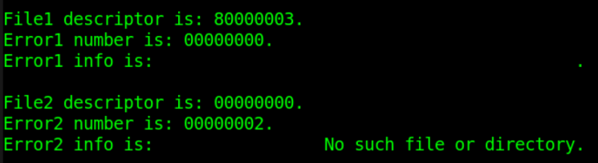
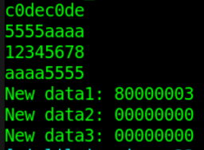
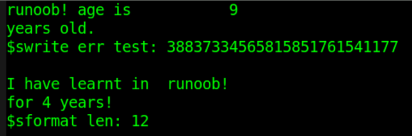
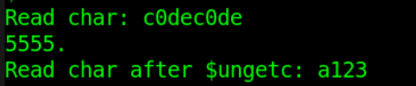
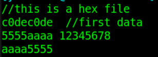

Verilog は、ファイルに対して操作を行うことができる多くのシステムタスクを提供します。よく使用されるシステムタスクは主に以下のとおりです。
- ファイルのオープン・クローズ：$fopen, $fclose, $ferror
- ファイルへの書き込み：$fdisplay, $fwrite, $fstrobe, $fmonitor
- 文字列の書き込み：$sformat, $swrite
- ファイルの読み込み：$fgetc, $fgets, $fscanf, $fread
- ファイルの位置決め：$fseek, $ftell, $feof, $frewind
- メモリのロード：$readmemh, $readmemb
ファイル操作タスク（特に $sforamt, $gets, $sscanf など）を使用してファイルを操作する場合、ファイルの性質と変数の内容に応じてどのシステムタスクを使用するかを決定し、パラメータおよび読み書き変数の型がファイルの内容と一致することを保証する必要があります。文字列型と複数進数型を混同しないようにしてください。
ファイルのオープン/クローズ
| システムタスク | 呼び出し形式 | タスクの説明 |
|---|---|---|
| ファイルのオープン | fd = $fopen("fname", mode) ; | fname は開くファイルの名前です fd は返される32ビットのファイルディスクリプタです --- 正しく開かれた場合、fd は非ゼロ値です --- オープンエラー時、fd はゼロ値です mode はファイルを開く方法を指定するために使用します |
| ファイルのクローズ | $fclose(fd) ; | fd が表す対応するファイルを閉じます |
| ファイルエラー | err = $ferror(fd, str) ; | ファイルが正常に開かれた場合： --- err と str はどちらもゼロ値です。 ファイルのオープンでエラーが発生した場合： --- err は非ゼロ値を返しエラーを示します --- str は非ゼロ値を返しエラータイプを格納します --- 公式では str の長さを640ビット幅にすることを推奨しています |
例としてコードは以下のとおりです：
例
integer fd1, fd2 ;
integer err1, err2 ;
reg [320:0] str1, str2 ; //エラータイプの変数は、サポートされている string 型にすることもできます
initial begin
//existing file
fd1 = $fopen("./DATA_RD.HEX", "r"); //存在するファイルを開く
err1 = $ferror(fd1, str1);
$display("File1 descriptor is: %h.", fd1 );//非ゼロ値
$display("Error1 number is: %h.", err1 ); //0
$display("Error2 info is: %s.", str1 ); //0
$fclose(fd1);
//not existing file
fd2 = $fopen("../../FILE_NOEXIST.HEX", "r");//開こうとしたファイルが存在しない
err2 = $ferror(fd2, str2);
$display("File2 descriptor is: %h.", fd2 ); //0
$display("Error2 number is: %h.", err2 ); //非ゼロ値
$display("Error2 info is: %s.", str2 ); //非ゼロ値
$fclose(fd2);
end

ファイルを開く方法 mode のタイプとその説明は以下のとおりです：
| r | テキストファイルを読み取り専用で開き、データの読み取りのみを許可します。 |
|---|---|
| w | テキストファイルを書き込み専用で開き、データの書き込みのみを許可します。ファイルが存在する場合は、元のファイルの内容は削除されます。ファイルが存在しない場合は、新しいファイルが作成されます。 |
| a | テキストファイルを追記モードで開き、ファイルの末尾にデータを書き込みます。ファイルが存在しない場合は、新しいファイルが作成されます。 |
| rb | バイナリファイルを読み取り専用で開き、データの読み取りのみを許可します。 |
| wb | バイナリファイルを書き込み専用で開くか作成し、データの書き込みのみを許可します。 |
| ab | バイナリファイルを追記モードで開き、ファイルの末尾にデータを書き込みます。 |
| r+ | テキストファイルを読み書きモードで開き、読み取りと書き込みを許可します。 |
| w+ | テキストファイルを読み書きモードで開くか作成し、読み書きを許可します。ファイルが存在する場合は、元のファイルの内容は削除されます。ファイルが存在しない場合は、新しいファイルが作成されます。 |
| a+ | テキストファイルを読み書きモードで開き、読み取りと書き込みを許可します。ファイルが存在しない場合は、新しいファイルが作成されます。読み取りはファイルの先頭アドレスから始まり、書き込みは追記モードのみです。 |
| rb+ | バイナリファイルを読み書きモードで開きます。機能は "r+" と同様です。 |
| wb+ | バイナリファイルを読み書きモードで開くか作成します。機能は "w+" と同様です。 |
| ab+ | バイナリファイルを読み書きモードで開きます。機能は "a+" と同様です。 |
ファイルへの書き込み
ファイルに書き込むシステムタスクには主に $fdisplay, $fwrite, $fstrobe, $fmonitor と、それらに対応する組み込みフォーマットのシステムタスク $fdisplayb, $fdisplayh, $fdisplayo などがあります。
| 呼び出し形式 | タスクの説明 |
|---|---|
| $fdisplay(fd, arguments) ; | 順次または条件に応じてファイルに書き込み、自動改行します |
| $fwrite(fd, arguments) ; | 順次または条件に応じてファイルに書き込み、自動改行しません |
| $fstrobe(fd, arguments) ; | 文の実行が完了した後にストローブしてファイルに書き込みます |
| $fmonitor(fd, arguments) ; | データに変化があればファイルに書き込みます |
標準表示タスク $display, $write, $strobe, $monitor と比較して、ファイル書き込みシステムタスクは、使用方法の形式上でファイルディスクリプタ fd を追加で指定する必要があるだけで、その他の表示条件やタイミング特性などは、対応する表示タスクと同じです。
追記書き込みを利用してファイルに対して書き込み操作を行う例は以下のとおりです：
例
integer fd ;
integer err, str ;
initial begin
fd = $fopen("./DATA_RD.HEX", "a+"); //末尾追記モードで開く
err = $ferror(fd, str);
if (!err) begin
$fdisplay(fd, "New data1: %h", fd) ;
$fdisplay(fd, "New data2: %h", str) ;
$fdisplay(fd, "New data3: %h", err) ;
//$write(fd, "New data3: %h", err) ; //最後の行は改行せずにプリント
end
$fclose(fd);
end
ファイル DATA_RD.HEX を開くと、ファイルの末尾に3行のデータが追加されていることが確認できます。

文字列の書き込み
Verilog は、文字列にデータを書き込むシステムタスク $swrite と $sformat も提供しています。
| 呼び出し形式 | タスクの説明 |
|---|---|
| $swrite(reg, list_of_arguments) ; | 順次または条件に応じて文字列を変数 reg に書き込みます |
| len = $sformat(reg, format_str, arguments) ; | フォーマット format_str に従って文字列を変数 reg に書き込みます フォーマットは $display で指定する形式と一致します 2番目のパラメータ format_str を省略することは推奨されません 文字列の長さ len を返すことができます |
$sformat の2番目のパラメータ format は文字列型であり、通常は省略しないことを推奨します。このパラメータは入力変数の型を指定します。型を指定する際に他の文字列情報を含めることもできます。型の種類と使い方は表示関数 $display を参照してください。このパラメータはレジスタ型にすることもできますが、格納されるデータは正常な文字列データである必要があります。
文字列を書き込むコードの例は以下のとおりです：
例
reg [299:0] str_swrite, str_sformat;
reg [63:0] str_buf ;
integer len, age ;
initial begin
#20 ;
str_buf = "runoob!" ;
age = 9 ;
//$swrite でフォーマットを指定して変数を含む文字列を書き込む
$swrite(str_swrite, "%s age is %d", str_buf, age) ;
$display("%s", str_swrite);
//$swrite で変数を含まない文字列を直接書き込む
$swrite(str_swrite, "years ", "old.") ;
$display("%s", str_swrite);
//$swrite でフォーマットを指定せず変数を含む文字列を書き込む（推奨されません）
$swrite(str_swrite, age) ;
$display("$swrite err test: %d", str_swrite);
$display();
//$sformat でフォーマットを指定して変数を含む文字列を書き込む
$sformat(str_sformat, "I have learnt in %s", str_buf) ;
$display("%s", str_sformat);
//$sformat で変数を含まない文字列を直接書き込み、文字列の長さを取得する
len = $sformat(str_sformat, "for 4 years!") ;
$display("%s", str_sformat);
$display("$sformat len: %d", len);
//$sformat で変数を含まない複数の文字列を一度に直接書き込む（推奨されません）
$sformat(str_sformat, "for", "4", "years!") ;
$display("$sformat err test: %s", str_sformat);
end
プリント情報のスペースを無視すると、デバッグ情報の出力は以下のとおりです：

このことから、$sformat と $swrite の使い方は同じにできることがわかります。例えば、$sformat は指定したフォーマットで文字列を書き込んだり、変数を含まない文字列を一度だけ書き込んだりできます。この場合、$sformat は2番目のパラメータで変数の型を指定していないことになるため、3番目のパラメータは省略して書かない必要があります。
$swrite は、変数を含まない複数の文字列を一度に書き込むこともできますが、$sformat はそのような呼び出しを許可しません。
また、$swrite を使用して変数を含む文字列を書き込む場合は、変数の型を指定することをお勧めします。そうしないと、結果が予測できない可能性があります。
ファイルの読み込み
| システムタスク | 呼び出し形式と説明 | |
|---|---|---|
| 文字単位でファイルを読み取る | c = $fgetc( fd ) ; | |
| 文字形式で fd のデータを変数 c に出力します。c のビット幅は最低8ビット必要です。 読み取りエラー時、c の値は EOF(-1) になります。$ferror でエラータイプを確認できます。 | ||
| 文字単位でバッファに書き込む | code = $ungetc(c, fd ) ; | |
| ファイル fd のバッファに文字 c を書き込みます c の値は次回の $fgetc 呼び出し時に返されます。ファイル fd 自体の内容は変化しません。 バッファへの書き込みが正常な場合、戻り値 code は 0 です。エラーが発生した場合、戻り値 code は EOF です。 | ||
| 行単位でファイルを読み取る | code = $fgets(str, fd) | |
| 変数 str が満たされるか、1行の内容を読み終わるか、ファイルが終了するまで、文字を連続して読み取ります。 正常に読み取った場合、戻り値 code は読み取った行数（回数）です。エラーが発生した場合、code は 0 です。 | ||
| フォーマットに従ってファイルを読み取る | code = $fscanf(fd, format, args) ; | |
| フォーマット format に従って、ファイル fd のデータを変数 args に読み取ります。 format は $display の指定フォーマットの説明を参照してください。 1回の読み取りの停止条件は、スペースまたは改行です。 読み取りエラーが発生した場合、戻り値 code は 0 です。 | ||
| フォーマットに従って文字列を読み取る | code = $sscanf(str, format, args) ; | |
| フォーマット format に従って文字列型変数 str を変数 args に読み込む を変数 data_get に直接転送した場合、data_get 内の内容は異常になる。 | ||
| バイナリでファイルを読み込む | code = $fread(store, fd, start, count) ; | |
| バイナリデータストリーム形式でファイル fd からデータを配列またはレジスタ変数 store に読み込む start はファイルの開始アドレス、count は読み込み長さである start/count が指定されていない場合、データはすべて変数 store に格納される store がレジスタ型の場合、start/count パラメータは無効となり、store 変数に一度データが満たされると読み込みが停止する |
c0dec0de 5555aaaa 12345678 aaaa5555 New data1: 80000003 New data2: 00000000 New data3: 00000000
$fgetc、$ungetc の呼び出し例
例
integer i ;
reg [31:0] char_buf ;
initial begin
#30 ;
fd = $fopen("DATA_RD.HEX", "r");
$write("Read char: ");
err = $ferror(fd, str);
if (!err) begin
for (i=0; i<13; i++) begin
char_buf[7:0] = $fgetc(fd) ; //1文字ずつ読み込む
$write("%c", char_buf[7:0]) ; //改行せずに1文字ずつ順に表示する
end
$write(".\n") ;
end
$ungetc("1", fd) ; //ファイルバッファに3回連続で書き込む
$ungetc("2", fd) ;
$ungetc("3", fd) ;
char_buf[7:0] = $fgetc(fd) ; //read 3
char_buf[15:8] = $fgetc(fd) ; //read 2
char_buf[23:16] = $fgetc(fd) ; //read 1，read buffer end
char_buf[31:24] = $fgetc(fd) ; //read a
$display("Read char after $ungetc: %s", char_buf);
$fclose(fd);
end
シミュレーション結果は以下の通りである。
図から分かるように、$fgetc が読み込んだ 13 文字は正しく、読み込んだ文字には改行文字が含まれている。
$ungetc でファイルバッファに文字データを書き込んだ後、$fgetc でファイルバッファの文字データを読み取ることができる。読み書きは先書き後出し（FILO、First in Last out）の原則に従い、スタックへのプッシュに相当する。文字データを先に"123"と書き込んだ場合、読み出されるデータは"321"となる。
ファイルバッファの読み取りが完了した後、再度文字データの読み取りを行うと、読み出されるデータは依然として前回のファイル読み取り位置に続くものであり、すなわち log 中の"a123"の文字"a"である。
この過程で、ファイル DATA_RD.HEX の内容は一切変更されていない。

$fgets の呼び出し例
例
integer code ;
reg [99:0] line_buf [9:0] ;
initial begin
#31 ;
fd = $fopen("DATA_RD.HEX", "r");
err = $ferror(fd, str);
if (!err) begin
for (i=0; i<6; i++) begin //文字列形式で1行ずつ読み込む
code = $fgets(line_buf[i], fd) ; //末尾に"\n"が含まれるため、2行表示される
$display("Get line data%d: %s", i, line_buf[i]) ;
end
end
//16進数表示では、対応する ASCIII コードが表示される
$display("Show hex line data%d: %h", 2, line_buf[2]) ;
$display("Show hex line data%d: %h", 4, line_buf[4]) ;
$fclose(fd) ;
end
シミュレーション結果は以下の通りである。
最初の4行のデータは文字列型として読み込み・表示され、結果は正常である。
ファイルの5行目のデータを読み込む際、変数 line_buf のビット幅 100 という制限により、ファイル内容"New data1: 80000003 "は2回に分けて読み込む必要がある。
各行の末尾には改行文字"\n"が含まれているため、$display 関数で表示すると、空行が1行余分に出力される。
文字列型として読み込み、データを16進数で表示する場合、ファイルの対応するデータ内容を直感的に表示することはできない。例えば、2行目の内容は"12345678,"ではなく、それに対応する ASCII コードが表示される。したがって、$fgets タスクは文字列型として読み込むものであることに注意が必要である。

$fscanf、$sscanf の呼び出し例
例
reg [31:0] data_buf [9:0] ;
reg [63:0] string_buf [9:0] ;
reg [31:0] data_get ;
reg [63:0] data_test ;
initial begin
#32 ;
fd = $fopen("DATA_RD.HEX", "r");
err = $ferror(fd, str);
if (!err) begin
for (i=0; i<4; i++) begin
//最初の4行のデータを16進数で読み込み・表示する
code = $fscanf(fd, "%h", data_buf[i]);
$display("$fscanf read data%d: %h", i, data_buf[i]) ;
end
for (i=4; i<6; i++) begin
//残りの2行のデータを文字列型として読み込み・表示する
code = $fscanf(fd, "%s", string_buf[i]);
$display("$fscanf read data%d: %s", i, string_buf[i]) ;
end
end
//(1) $sscanf のソース変数 data_test は文字列型である
data_test = "fedcba98" ;
code = $sscanf(data_test, "%h", data_get);
$display("$sscanf read data0: %h", data_get) ;
//(2) $sscanf: ソース変数 data_test をまず文字列変数に変換する
code = $sformat(data_test, "%h", data_buf[2]);
code = $sscanf(data_test, "%h", data_get);
//16進数変数を直接入力することは推奨されない
//code = $sscanf(data_buf[2], "%h", data_get);
$display("$sscanf read data0: %h", data_get) ;
$fclose(fd) ;
end
シミュレーション結果は以下の通りである。
$fscanf を使用してファイルの最初の4行の内容を16進数で読み込み・表示し、残りの2行の内容を文字列型として読み込み・表示しているが、いずれも正常である。
$sscanf を使用してソースレジスタの内容を読み取り、宛先レジスタに転送する場合、ソースレジスタ内の内容は文字列型データであるべきである。
例えば、$sscanf を使用して16進数のデータ data_buf
もし $sscanf を直接使用して16進数形式のデータ data_buf
こっそり教えると、レジスタ間では直接代入が可能である！！！

$fread の呼び出し例
例
reg [71:0] bin_buf [3:0] ; //各行には8つのワード型データと1つの改行文字がある
reg [143:0] bin_reg ;
initial begin
#40 ;
fd = $fopen("DATA_RD.HEX", "r");
err = $ferror(fd, str);
if (!err) begin
code = $fread(bin_buf, fd, 0, 4); //配列型として読み込み、4回読み込む
$display("$fread read data %h", bin_buf[0]) ;//16進数で表示
$display("$fread read data %h", bin_buf[1]) ;
$display("$fread read data %s", bin_buf[2]) ;//文字列で表示
$display("$fread read data %s", bin_buf[3]) ;
end
fd = $fopen("DATA_RD.HEX", "r");
code = $fread(bin_reg, fd); //単一レジスタの読み込み
$display("$fread read data %h", bin_reg) ;
$fclose(fd) ;
end
シミュレーション結果は以下の通りである。
$fread がバイナリでファイルを読み込む場合、開始アドレスと読み込み長さはどちらも配列型変数を設定するためのパラメータである。
データを格納する変数型が配列ではない reg 型の場合、読み込みは reg 型変数が満たされるまでの1回だけ行われる。

ファイルの位置決め
| システムタスク | 呼び出し形式 | タスク説明 |
|---|---|---|
| ファイル位置の取得 | pos = $ftell( fd ) ; | ファイルの現在位置からファイル先頭までのオフセットを返す。初期アドレスは 0 である オフセットはバイト（8ビット）を1単位とする $fseek と組み合わせて使用する |
| 再位置決め | code = $fseek(fd, offset, type) ; | ファイルの次の入力または出力の位置を設定する offset は設定するオフセットである type はオフセットの操作タイプである --- 0: 位置をオフセットアドレスに設定する --- 1: 位置を現在位置にオフセットを加えた位置に設定する --- 2: 位置をファイル末尾にオフセットを加えた位置に設定する。ファイル末尾から前方へのオフセットを表すには負の数をよく使用する |
| オフセットなしの再位置決め | code = $rewind( fd ) ; | $fseek( fd, 0, 0) ; と等価である |
| ファイル末尾の判定 | code = $feof(fd) ; | ファイル末尾に達したかどうかを判定する ファイル末尾を検出した場合の戻り値は 1、それ以外の場合は 0 である |
ファイル DATA_RD.HEX の内容は以下のように表すことができる。
改行文字"\n"を終端記号とすると、ファイルサイズは 4x9 + 3x20 = 96 バイトとなる。

ファイル位置決めのテストコードは以下の通りである：
例
reg [31:0] data4 ; //レジスタ変数の長さは 4 バイト
reg [199:0] str_long ;
integer pos ;
initial begin
#40 ;
fd = $fopen("DATA_RD.HEX", "r");
err = $ferror(fd, str);
if (!err) begin
//first read
code = $fscanf(fd, "%h", data4);//位置0から読み込み開始
pos = $ftell(fd); //8バイト読み込んだ後の位置は8、座標は(0,8)
$display("Position after read: %d", pos) ;
$display("1st read data: %h", data4) ;
//type = 0
code = $fseek(fd, 4, 0) ; //位置4、座標(0,4)から読み込み開始
code = $fscanf(fd, "%h", data4); //改行文字を読み込んだら停止
pos = $ftell(fd); //4バイト読み込んだ後の位置は8、座標は(0,8)
$display("type 0: current position: %d", pos) ;
$display("type 0: read data: %h", data4) ;
//type = 1
code = $fseek(fd, 4, 1) ; //位置4+9=12、座標(1,3)から読み込み開始
code = $fscanf(fd, "%h", data4); //改行文字を読み込んだら停止
pos = $ftell(fd); //5バイト読み込んだ後の位置は17、座標は(1,8)
$display("type 1: current position: %d", pos) ;
$display("type 1: read data: %h", data4) ;
//type = 2
code = $fseek(fd, -(96-31), 2) ; //位置31、座標(3,4)から読み込み開始
code = $fscanf(fd, "%h", data4);
pos = $ftell(fd); //4バイト読み込んだ後の位置は35、座標は(3,8)
$display("type 2: current position: %d", pos) ;
$display("type 2: read data: %h", data4) ;
//rewind read
code = $rewind(fd) ;//ファイルポインタの位置をファイル先頭に再度合わせる
pos = $ftell(fd); //このとき位置は 0 である
$display("Position after $rewind: %d", pos) ;
//read all content of file
while (!$feof(fd)) begin
code = $fgets(str_long, fd);
$write("Read : %s", str_long) ;
end
$fclose(fd) ;
end
end
シミュレーション結果は以下の通りである。
図から分かるように、log の末尾に1行多いデータが表示されている。これは、ファイル DATA_RD.TXT の末尾に空白行がもう1行ある（改行操作の結果）ためであり、システムタスク $feof はこの空白行をファイル末尾とは見なさないため、戻り値は依然として 0 である。しかし実際にはこの行にはデータがないため、読み込まれるデータは制御不能となる。
ファイルの最終行データにおける改行文字の影響を排除するには、「ファイル書き込み」の例で最後のファイル書き込みシステムタスク $fdisplay を $write に置き換えればよい。
その他の log については、コードのコメントと照合すればシミュレーションが正しいことが分かるため、ここではまとめて説明しない。

メモリのロード
| システムタスク | 呼び出し形式と説明 | |
|---|---|---|
| 16進数ファイルのロード | $readmemh("fname", mem, start_addr, finish_addr) | |
| fname はデータファイル名である mem は配列型/メモリ型変数である start_addr、finish_addr はそれぞれ開始アドレスと終了アドレスである start_addr、finish_addr は省略できる。この場合、データロードの停止条件は、メモリ変数 mem が満たされるか、ファイルの読み込みが完了することである ファイル内容には、空白文字（または改行、スペース文字）、バイナリまたは16進数データのみが含まれるべきである コメントは"//"で記述する。データ間は改行文字で区切ることを推奨する | ||
| バイナリファイルのロード | $readmemb("fname", mem, start_addr, finish_addr) | |
| 使用方法と形式は $readmemb と同じである |
ファイル DATA_WITHNOTE.HEX の内容は以下の通りである。このファイルの内容をメモリ変数にロードする。

コード例は以下の通りである：
例
reg [31:0] mem_load [3:0] ;
initial begin
#50 ;
$readmemh("./DATA_WITHNOTE.HEX", mem_load);
$display("Read memory1: %h", mem_load[0]) ;
$display("Read memory2: %h", mem_load[1]) ;
$display("Read memory3: %h", mem_load[2]) ;
$display("Read memory4: %h", mem_load[3]) ;
end
シミュレーション結果は以下の通りである：

クリックしてノートを共有
<p style="font-size:14px;">メモは本記事の内容を拡張したものである必要があります！</p><br> <p style="font-size:12px;"><a href="../tougao.html" target="_blank">記事投稿は、こちらをクリック</a></p> <p style="font-size:14px;"><a href="./runoob-user-test-intro.html" target="_blank">登録招待コードの取得方法</a></p> <h3 class="text-muted"><i class="fa fa-info-circle" aria-hidden="true"></i> メモを共有する前に<a href=".." class="runoob-pop">ログイン</a>が必要です！</h3> <p><a href="./runoob-user-test-intro.html" target="_blank">登録招待コードの取得方法</a></p>